1과목: 응용역학
1. 다음 그림의 캔틸레버보에서 최대 휨모멘트는 얼마인가?
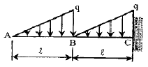
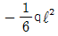
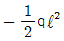
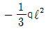
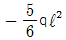
2. 아래 그림과 같은 단순보에서 C점의 처짐은?
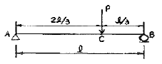
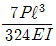
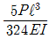
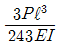
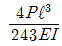
3. 경간(Span) 10m 인 단순보에 아래 그림과 같은 하중이 작용할 때 최대 휨응력은? (단, 자중은 무시한다.)
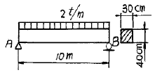
4. 다음 그림과 같은 보에서 A지점의 반력은?
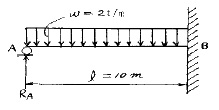
5. 그림의 직사각형 ABCD는 기둥의 단면이다. 이 단면의 핵(kernel, core)을 EFGH라고 할 때 FH/BC 의 값은?
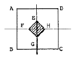
6. 다음과 같은 구조물은 몇 차 부정정 구조물인가?
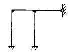
7. 다음 단순보의 지점 A에서의 처짐각 θA는 얼마인가? (단, EI는 일정하다.)
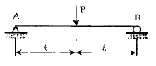
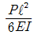
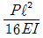
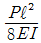
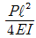
8. 그림에서 나타낸 구조물에서 A점의 휨모멘트는?
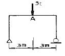
9. 지름 D, 길이 ℓ인 원형 기둥의 세장비는?
10. 다음 장주의 단면, 길이, 하중이 같을 때 가장 강한 기둥은?
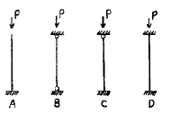
11. 그림과 같은 단순보에서 최대 휨모멘트는?
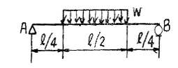
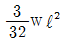
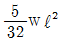
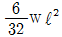
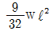
12. 그림과 같은 단면의 도심거리 Y를 구한 값으로 옳은 것은?
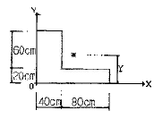
13. 지름이 4cm인 원형 강봉을 10t의 힘으로 잡아 당겼을 때 소성은 얼어나지 않았고 탄성변형에 의해 길이가 1mm증가 하였다. 강봉에 축척된 탄성 변형에너지는 얼마인가?
14. 그림과 같은 역계에서 합력R의 위치 x의 값은?
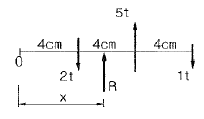
15. 다음 그림에서 x-x축에 대한 단면 2차 반지름 (γx)은 몇 m인가?
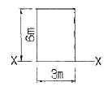
16. 그림과 같이 부재의 자유단이 옆의 벽과 1mm떨어져 있다. 부재의 온도가 현재보다 20℃ 상승할 때, 부재 내에 생기는 열응력의 크기는? (단, E=20,000 kg/cm2, α=10-5/℃이다.)
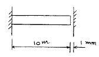
17. 길이 8m의 강봉에 인장력 15t을 가했을 때 강봉의 늘음량이 0.2cm 였다면 이때 강봉의 지름은? (단, 탄성계수는 2.1×106 kg/cm2이다.)
18. 정정 구조물에 비해 부정정 구조물이 갖는 장점을 설명한 것 중 틀린 것은?
19. 그림의 내민보에서 C단에 힘 P=2400kg의 하중이 150°의 경사로 작용하고 있다. A단의 연직반력(Ra)을 0(零)으로 하려면 AB구간에 작용될 등분포하중 W의 크기는?
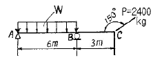
20. 아래 그림에서 P1 과 P2 의 크기는?
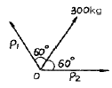
2과목: 측량학
21. 직접고저측량을 하여 그림과 같은 결과를 얻었다. 이 때 B점의 표고는? (단, A점의 표고는 100m 이고 단위는 [m]이다.)
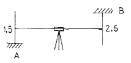
22. 매개변수 A 가 60m인 클로소이드 곡선상의 시점에서 곡선길이(L)이 30m일 때 곡선의 반지름(R)은?
23. 항공사진은 다음 어떤 원리에 의한 지형지물의 상인가?
24. 고속도로의 노선설계에 많이 이용되는 완화곡선은?
25. 다각측량에서 측선 AB의 거리가 2068m이고 A점에서 20″의 각관측오차가 발생하였을 때 B점에서의 거리오차는?
26. 수준 측량에서 전ㆍ후시 시준거리를 같게 하여 소거할 수 있는 기계오차로 가장 적합한 것은?
27. 삼각형 면적을 계산하기 위해 변길이를 관측한 결과가 그림과 같을 때 이 삼각형의 면적은?
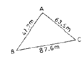
28. 평면직교좌표에서 동서거리로 표시하는 것은?
29. 등고선에서 등고선 간의 최단거리 방향은 그 지형의 무엇을 표시하는 것인가?
30. 다음 삼각망의 구성에 대한 설명 중 잘못된 것은?
31. 100m2의 정사각형 토지면적을 0.1m2까지 정확하게 구하기 위하여 필요하고도 충분한 한 변의 측정거리는 다음 중 몇 mm 까지 측정하여야 하겠는가?
32. 기초터파기 공사를 하기 위해 가로, 세로, 깊이를 스틸테이프로 측량하여 다음과 같은 결과를 얻었다. 토공량과 여기에 포함된 오차는? (단, 가로 40m±0.⑤m, 세로 20m±0.03m, 깊이 15m±0.02m)
33. 완화곡선설치에 관한 설명으로 옳지 않은 것은?
34. 축척 1 : 25,000 지역의 지형도 1매를 1 : 5,000 축척으로 재편집하고자 할 때 몇 매의 지형도가 나오는가?
35. 사면(斜面)거리 50m를 측정하는데 그 보정량이 1mm이라면 그 경사도(傾斜度)는 약 얼마인가?
36. 하천 측량에서 유속을 구하고자 수면으로부터 수심(H)의 0.2H, 0.6H, 0.8H 되는 지점의 속도를 측정하여 각각 0.72m/sec, 0.67m/sec, 0.69m/sec의 결과를 얻었다. 3점법에 의한 평균유속은?
37. 축척 1/500의 평판측량에서 제도허용 오차가 0.2mm일 때 구심하는 경우 가장 올바르게 표현된 것은?
38. 사진의 중심점을 찾으려면 다음 어느 것을 이용하는가?
39. 그림에서 AC및 DB간에 그림과 같이 곡선을 넣으려 할 때 교점(P)에 장애물이 있어 ∠ACD = 150°, ∠CDB = 90°및 CD의 거리 400m를 측정하였다. C점으로부터 A(B,C)점까지의 거리는? (단, 곡선의 반지름은 500m로 한다.)
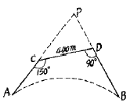
40. 아래 그림과 같은 3개의 각 x1, x2, x3를 같은 정도로 측정한 결과, x1=31° 38′ 18″, x2 = 33° 04′ 31″, x3 = 64° 42′ 34″로 나타났다. ∠AOB의 보정된 값은?
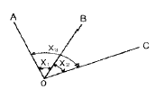
3과목: 수리학
41. 비중 0.92의 빙산이 비중 1.025의 해수면에 떠있다. 수면에서 위에 나온 빙산의 체적이 100m3 이라면 빙산 전체의 체적은?
42. 정상적인 흐름 내의 한 개 유선에서 동수경사선은 다음 중 어느 값을 연결한 선의 기울기인가? (단, v = 유속, g = 중력가속도, wo = 물의 단위중량, P = 압력, Z = 위치수두)
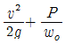
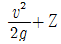
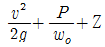
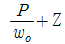
43. 원관내 흐름이 포물선형 유속분포를 가질 때 관중심선상에서의 유속을 Vo, 전단응력 τ0, 관 벽면에서의 전단응력 τs, 관내의 평균유속을 Vm, 관 중심선에서 y만큼 떨어져 있는 곳의 유속을 V라 할 때 다음 중 틀린 것은?
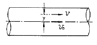
44. 수면으로부터 2.5m 깊이에 정사각형 단면의 오리피스를 설치하여 0.042m3/sec의 물을 유출시킬 때 정사각형 단면의 한 변의 길이는? (단, 오리피스 계수 C=0.6)
45. 길이가 400m이고 지름이 25cm인 관에 평균유속 1.82m/sec로 물이 흐르고 있다. 관 마찰 손실계수 f=0.0422일 때 손실 수두는?
46. 다음 중 다르시(Darcy)법칙에 관한 사항 중 옳은 것은? (여기서, v : 평균유속, h : 수두, dh : 수두차, ds : 흐름의 길이, k : 투수계수)
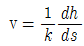
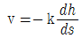
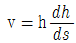
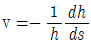
47. 강우량-유역면적-강우지속 기간 관계를 수립하는 작업을 무엇이라 하는가?
48. 개수로에서 수심 h=1.2m이고, 평균유속 V= 4.54m/sec인 흐름의 비에너지(Specific energy)는?
49. 다음 중 유역의 평균강우량 산정법이 아닌 것은?
50. 다음 그림과 같은 원형관에 물이 흐를 경우 1, 2, 3 단면에 대한 설명으로 옳은 것은? (단, D1=30cm, D2=10cm, D3=20cm)
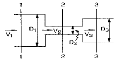
51. 그림의 평판에 작용하는 전수압의 연직 분력(Pv)은? (단, 평판의 폭인 Z축 방향의 길이는 5m임)
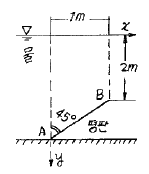
52. Froude수가 갖는 의미로 옳은 것은?
53. 다음과 같은 집중호우가 자기기록지에 기록되었다. 지속기간 20분 동안의 최대 강우강도를 구한 값은?
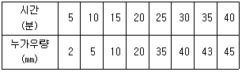
54. 다음 중 하천 유량 측정 방법이 아닌 것은?
55. 그림과 같이 물을 채운 용기에서 D점의 절대압력은? (단, 대기압 = 1.033kg / cm2)
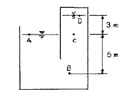
56. 수표면적이 200ha인 저수지에서 24시간 동안 측정된 증발량은 2cm이며 이 기간 동안 평균 2m3/s 의 유량이 저수지로 유입된다. 24시간 경과 후 저수지의 수위가 초기 수위와 동일 할 경우 저수지로부터의 유출량은 얼마인가? (단, 저수지의 수표면적은 수심에 따라 변화하지 않음)
57. 용기에 물을 넣고 a=9.8m/sec2의 가속도로 윗 방향으로 운동시킬 때 A점에서의 정수압은?
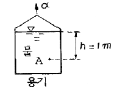
58. 다음 중 위어(weir)의 설치 목적이 아닌 것은?
59. 부체가 수면에 의해 절단되는 부양면으로부터 부체의 최하단부까지의 깊이를 무엇이라 하는가?
60. 차원방정식 [LMT]계를 [LFT]계로 고치고자 할 때 이용되는 식으로 옳은 것은?
4과목: 철근콘크리트 및 강구조
61. 그림과 같이 지간 중앙점에서 강선을 꺾었을 때 이 중앙점에서 상향력 U의 값은?
62. PSC 부재에서 프리스트레이스(prestress)의 직접적인 감소 원인이 아닌 것은?
63. 독립 확대 기초의 크기가 2×3m이고 지반의 허용지지력이 200kN/m2일 때 이 기초가 받을 수 있는 허용하중의 크기는?
64. As' = 1,400mm2로 배근된 그림과 같은 복철근 보의 탄성처짐이 10mm라 할 때 1년 후 장기처짐을 고려한 총처짐량은? (단, 1년 후 지속하중 재하에 따른 계수 ζ=1.4 이다.)
65. 강판(150 × 10mm)을 그림과 같이 ø22mm 리벳(rivet)으로 연결할 때 강판의 최대 허용인장력은? (단, fta=120MPa)
66. 다음 중 최소 전단철근 규정이 적용되는 경우는?
67. 다음과 같은 대칭 T형보의 유효폭(b)을 산정할 때 필요한 공식의 종류에 포함되지 않는 것은?
68. 옹벽의 일반적 설계에 관한 다음 설명 중 틀린 것은?
69. 그림과 같은 단면을 갖는 지간 20m의 PCS보에 PS 강재가 150mm의 편심거리를 가지고 직선배치 되어 있다. 자중을 포함한 등분포하중 8kN/m가 보에 작용할 때, 보 중앙단면 콘크리트 상연응력을 계산하면? (단, 유효 프리스트레스 힘 Pe=1,800kN)
70. 콘크리트의 크리프에 대한 다음 기술 중 적당하지 않은 것은?
71. 강도설계법에서 전단과 휨만을 받는 부재에 콘크리트가 부담하는 공칭전단 강도(Vc)는 얼마인가? (단, fck=21MPa ,fy=300MPa, bw=300㎜, d=500㎜)
72. 강도해석에서 fck=30MPa일때 응력도의 높이 비 β1은 얼마인가?
73. 콘크리트의 균열에 대한 다음 설명중 틀린 것은?
74. 인장을 받는 이형철근의 기본정착길이 ℓdb 를 계산하기 위해 필요한 요소가 아닌것은?
75. 아래 그림의 복철근 직사각형 보에서 등가 응력 높이 a는? (단, fck=21MPa, fy=300MPa)
76. 강재의 압축부재에 대한 설명으로 옳은 것은?
77. 그림과 같은 T형보에 대한 등가깊이 a는 얼마인가? (단, fck=21MPa , fy=400MPa이다)
78. b = 300㎜ d = 500㎜인 직사각형보에 하중계수를 고려한 계수 전단력 80kN이작용하고 fck=21MPa, fy=400MPa이라면 필요한 최소 전단철근량은 약 얼마인가? (단, 전단철근은 수직스터럽을 사용하며 간격은 250㎜)
79. 보의 주철근을 둘러싸고 이에 직각되게 또는 경사지게 배치한 복부보강근으로서 전단력 및 비틀림모멘트에 저항 하도록 배치한 보강철근은?
80. 강도설계법에서 직사각형 단철근보의 균형철근비 pb는? (단, fck=20MPa, fy=300MPa 이다.)
5과목: 토질 및 기초
81. 다음 sounding의 종류 가운데 시험기의 회전에 의해서만 지반의 강도를 측정하는 방법은?
82. 다짐에 관한 다음의 설명중 타당하지 않은 것은?
83. 그림의 옹벽이 받는 전 주동 토압은? (단,Rankine의 토압이론으로 계산할 것)
84. 연약점토 지반에 성토할 때 다음 공법 중 이용도가 가장 낮은 것은?
85. 비교적 균질한 토층을 실험한 결과 rt=2.0t/m3, C=2.5t/m2, ø=10° 인 경우에 연직으로 절취할 수 있는 한계고는 얼마인가?
86. Terzaghi의 지지력 공식에서 고려되지 않는 것은?
87. 다음 표준관입시험에 관한 설명으로 옳지 않은 것은?
88. 점착력이 큰 지반에 강성의 기초가 놓여 있을 때 기초바닥의 응력상태를 설명한 것 중 옳은 것은?
89. 그림에서 모래층에 분사현상이 발생되는 경우는 수두 h가 몇 ㎝이상일때 일어나는가? (단, Gs=2.68, n=60%)
90. 현장에서 채취한 흙 시료의 교란된 정도를 알기 위하여 시료 채취에 사용한 원통형 튜브(tube)의 규격을 조사한결과 튜브의 외경이 5㎝이고 절단면의 내경은 4.7625㎝였다. 면적비(Ar)는 얼마인가?
91. 포화점토의 일축압축 시험결과 자연상태 점토의 일축압축강도와 흐트러진 상태의 일축압축 강도가 각각 1.8㎏/cm2, 0.4㎏/cm2였다. 이점토의 예민비는?
92. 미세한 모래와 실트가 작은 아치를 형성한 고리모양의 구조로써 간극비가 크고, 보통의 정적 하중을 지탱할 수 있으나 무거운 하중 또는 충격하중을 받으면 흙구조가 부서지고 큰 침하가 발생되는 흙의 구조는?
93. 상방향의 침투가 있는 지반에서 물에 의한 단위체 적당 침투력을 나타낸 식으로 옳은 것은? (단, 시료의 단면적은 A,시료의 길이는 L,시료의 포화 단위중량은 rsat, 물의 단위중량은 rw, 동수경사는 ¡, 수두차는 △h이다.)
94. 그림과 같은 지반에서 깊이 5m지점에서의 전단강도는? (단, 내부마찰각은 35°, 점착력은 0 이다.)
95. 그림에서 모관수에 의해 A-A면까지 완전히 포화되었다고 가정하면 B-B면에서의 유효응력은 얼마인가?
96. CBR시험에서 피스톤 2.5㎜관입될때와 5㎜관입될 때를 비교한 결과 5㎜값이 더 크게 나타났다. 어떻게 하여 CBR 값을 결정하는가?
97. 두께9m의 점토층에서 하중강도 P1일때 간극비는 2.0 이고 하중강도를 P2로 증가시키면 간극비는 1.8로 감소되었다. 이 점토층의 압밀 침하량은?
98. 점성토지반의 성토 및 굴착시 발생하는 heaving 방지대책으로 틀린 것은?
99. 내부 마찰각이 영(零)인 점토질 흙의 일축압축 시험시 압축강도가 4㎏/cm2이었다면 이 흙의 점착력은?
100. 다음 중 흙지반의 투수계수에 영향을 미치지 않는 것은?
6과목: 상하수도공학
101. 다음의( )안에 가장 알맞은 내용으로 짝지어진 것은?
102. 교차연결(cross connection)에 대한 설명으로 가장 옳은 것은?
103. 최대 계획 우수 유출량의 산정은 원칙적으로 합리식에 의한다. 합리식에 사용되는 강우강도식의 형태가 아닌 것은?
104. 생물학적 폐수처리 과정에서 미생물에 의해 유기성질소가 분해, 산화되는 과정을 순서대로 나열한 것은?
1⑤. 급수(給水)장치용 기구가 구비해야 할 요건으로 적합 하지 않은 것은?
106. 배수관에서 분기하여 각 수요자에게 음용수를 공급하는 것을 목적으로 하는 시설은?
107. 폭 8m,길이30m, 유효수심 3m인 최초 침전지에서 1일 최대 오수량 10,000m3/day를 처리할 때 체류시간은?
108. 활성슬러지법에 의하여 폐수를 처리할 경우 폭기조 혼합액의 MLSS가 2,000㎎/ℓ이고,이것을 30분간 정치했을 때의 침강용적이 본래의 30%라면 슬러지 용적지수(SVI)는?
109. 강우강도 , 유입시간 180초, 유역면적 4km2 유출계수 0.9, 하수관내 유속 50m/min 인 경우 길이 1㎞의 하수관내 peak 유량은? (단, 여기서 t는 분단위)
110. 급속여과지의 여과속도는 얼마를 표준으로 하는가?
111. 합류식 하수관거의 설계시 사용하는 유량은?
112. 수원을 선정할 때 구비조건으로 틀린 것은?
113. 침사지에 대한 설명 중 틀린 것은?
114. 정수장에서 처리대상 물질과 처리방법이 적절하지 않은 것은?
115. 용존산소에 대한 설명 중 옳지 않은 것은?
116. 관로 유속의 급격한 변화로 인한 충격현상으로 관내압력이 급상승 또는 급강하 하는 현상을 무엇이라 하는가?
117. 주거지역(면적 3ha, 유출계수 0.5), 상업지역(면적 2ha, 유출계수 0.7), 녹지(면적 1ha, 유출계수 0.1)로 구성된 지역의 평균 유출계수는?
118. 다음의 공식 중 상수도 배수관 설계에 가장 많이 사용되는 공식은?
119. 하수관거의 부속설비에 대한 설명으로 옳지 않은 것은?
120. 상수도계통에서 배수지로 가장 적당한 위치는?